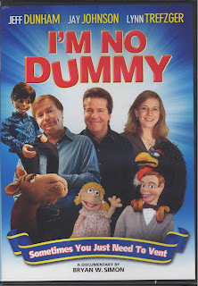

"I'm No Dummy"
4/19/2010
{kind=link}

This DVD is available in your retail stores as well as online sources and I recommend you purchase a copy. As the cover indicates, the documentary by Bryan Simon, features ventriloquists Jeff Dunham, Jay Johnson, and Lynn Trefzeger which in itself makes it entertaining viewing. But it is much more than that with some wonderful vintage clips of Edgar Bergen, Senor Wences, Jimmy Nelson and others. In some ways I had the feeling I was watching a screenplay version of "Dummy Days" by Kelly Asbury with the addition of the contemporary vents featured.
The producers tout this work as "an insightful documentary about ventriloquism." I feel it would be more accurately described as a "ventriloquist themed documentary". Simon did an excellent job with what he brings viewers, but there are facets of the art missing. And how can you gather interviews at the ConVENTion without even making mention or showing a clip with the convention chairman? A serious oversight in my opinion. But as documentaries go, this is the best one I've seen. I'm awarding this copy to Ron Havens.
Contact Mr. D to claim your prize.
The producers tout this work as "an insightful documentary about ventriloquism." I feel it would be more accurately described as a "ventriloquist themed documentary". Simon did an excellent job with what he brings viewers, but there are facets of the art missing. And how can you gather interviews at the ConVENTion without even making mention or showing a clip with the convention chairman? A serious oversight in my opinion. But as documentaries go, this is the best one I've seen. I'm awarding this copy to Ron Havens.
Contact Mr. D to claim your prize.